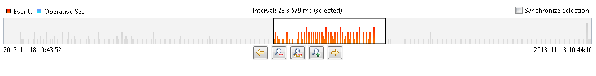
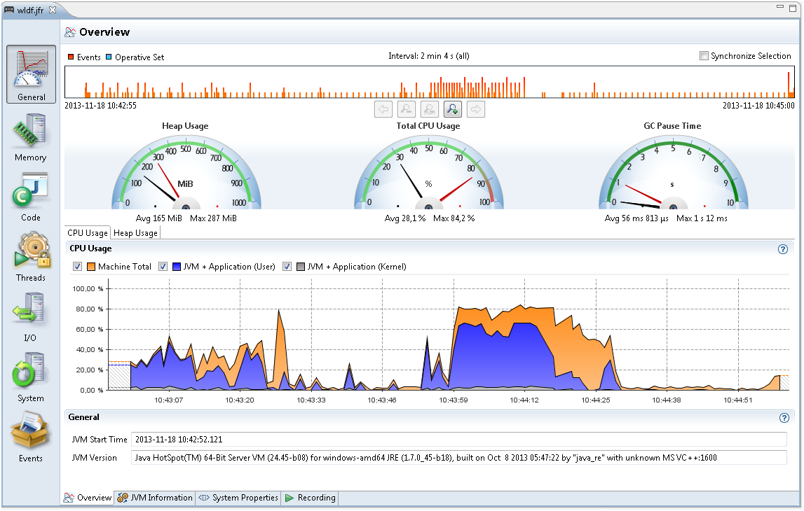
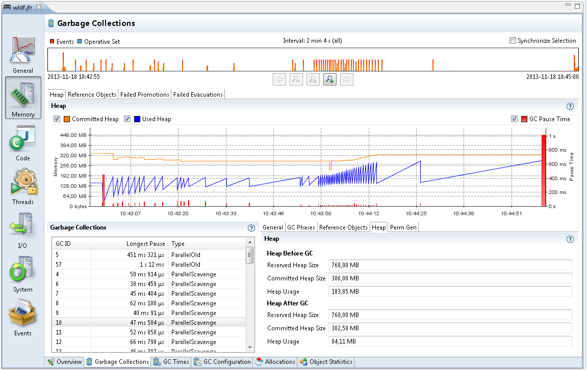
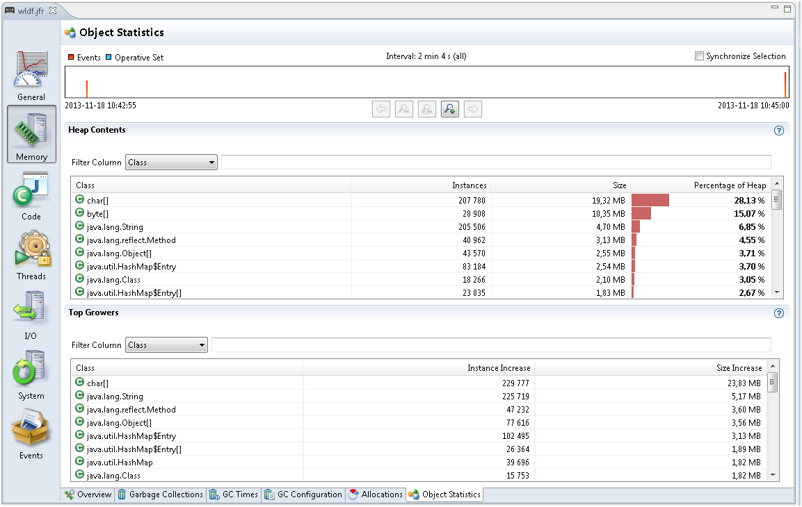
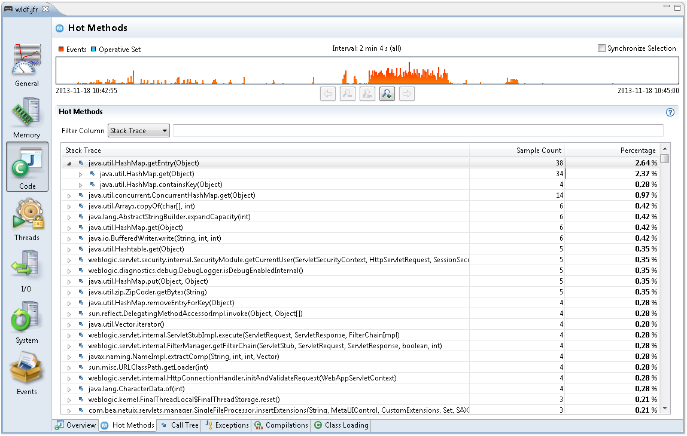
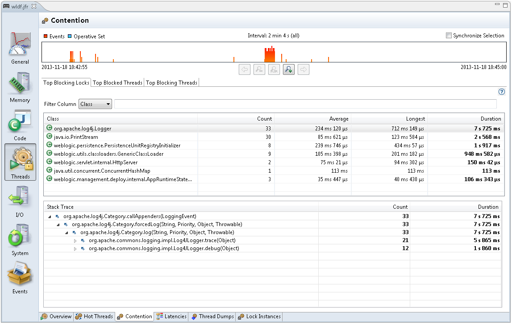

The topic describes how to get a sample JFR to inspect a flight recording and describes various tabs in Java Mission Control for you to analyze the flight recordings. The following sections are described:
After you create a Flight Recording, you can open it in Mission Control. An easy way to look at a flight recording is:
Open Mission Control and select the JVM Browser tab.
Select The JVM Running Mission Control option to create a short recording.
Another way is to download Demos and Samples, and open one of the recordings from sample\missioncontrol\flightrecordings\. The wldf.jfr recording is a sample recording from an application server, which is used as an example in the following sections.
Open a flight recording to see several main tabs such as General, Memory, Code, Threads, I/O, System, and Events. You can also have other main tabs if any plug-ins are installed. Each of these main tabs have sub tabs. Click the question mark to view the built-in help section for the main tabs and subtabs.
Each tab has a range navigator at the top view.
Figure 2-8 Inspect Flight Recordings - Range Navigator
The vertical bars in Figure 2-8 represent the events in the recording. The higher the bar, the more events there are at that time. You can drag the edges of the selected time to zoom in or out in the recording. Double click the range navigator to zoom out and view the entire recording. Click the Synchronize Selection check box for all the subtabs to use the same zoom level.
See Using the Range Navigator in the built-in help for more information. The events are named as per the tab name.
The General Tab contains a few subtabs that describe the general application. The first subtab is Overview, which shows some basic information such as the maximum heap usage, total CPU usage, and GC pause time, as shown in Figure 2-9.
Figure 2-9 Inspect Flight Recordings - General Tab
Also, look at the CPU Usage over time and both the Application Usage and Machine Total. This tab is good to look at when something that goes wrong immediately in the application. For example, watch for CPU usage spiking near 100 percent or the CPU usage is too low or too long garbage collection pauses.
Note: A profiling recording started with Heap Statistics gets two old collections, at the start and the end of the recording that may be longer than the rest.
The other subtab - JVM Information shows the JVM information. The start parameters subtabs - System Properties shows all system properties set, and Recording shows information about the specific recording such as, the events that are turned on. Click the question marks for built-in detailed information about all tabs and subtabs.
The Memory tab contains information about Garbage Collections, Allocation patterns and Object Statistics. This tab is specifically helpful to debug memory leaks as well as for tuning the GC.
The Overview tab shows some general information about the memory usage and some statistics over garbage collections. Note: The graph scale in the Overview tab goes up to the available physical memory in the machine; therefore, in some cases the Java heap may take up only a small section at the bottom.
The following three subtabs are described from the Memory tab.
Garbage Collection tab: The Garbage Collection tab shows memory usage over time and information about all garbage collections.
Figure 2-10 Inspect Flight Recordings - Garbage Collections
As shown in Figure 2-10, the spiky pattern of the heap usage is perfectly normal. In most applications, temporary objects are allocated all the time. Once a condition is met, a Garbage Collection (GC) is triggered and all the objects no longer used are removed. Therefore, the heap usage increases steadily until a GC is triggered, then it drops suddenly.
Most GCs in Java have some kind of smaller garbage collections. The old GC goes through the entire Java heap, while the other GC might look at part of the heap. The heap usage after an old collection is the memory the application is using, which is called the live set.
The flight recording generated with Heap Statistics enabled will start and end with an old GC. Select that old GC in the list of GCs, and then choose the General tab to see the GC Reason as - Heap Inspection Initiated GC. These GCs usually take slightly longer than other GCs.
For a better way to address memory leaks, look at the Heap After GC value in the first and last old GC. There could a memory leak when this value is increasing over time.
The GC Times tab has information about the time spent doing GCs and time when the application is completely paused due to GCs. The GC Configuration tab has GC configuration information. For more details about these tabs, click the question mark in the top right corner to see the built-in help.
Allocations tab: Figure 2-11 shows a selection of all memory allocations made. Small objects in Java are allocated in a TLAB (Thread Local Area Buffer). TLAB is a small memory area where new objects are allocated. Once a TLAB is full, the thread gets a new one. Logging all memory allocations gives an overhead; therefore, all allocations that triggered a new TLAB are logged. Larger objects are allocated outside TLAB, which are also logged.
Figure 2-11 Inspect Flight Recordings - Allocations Tab

To estimate the memory allocation for each class, select the Allocation in new TLAB tab and then select Allocations tab. These allocations are object allocations that happen to trigger the new TLABs. The char arrays trigger the most new TLABs. How much memory is allocated as char arrays is not known. The size of the TLABs is a good estimate for memory allocated by char arrays.
Figure 2-11 is an example for char arrays allocating the most memory. Click one of the classes to see the Stack Trace of these allocations. The example recording shows that 44% of all allocation pressure comes from char arrays and 27 percent comes from Array.copyOfRange, which is called from StringBuilder.toString. The StringBuilder.toString is in turn usually called by Throwable.printStackTrace and StackTraceElement.toString. Expand further to see how these methods are called.
Note: The more temporary objects the application allocates, the more the application must garbage collect. The Allocations tab helps you find the most allocations and reduce the GC pressure in your application. Look at Allocation outside TLAB tab to see large memory allocations, which usually have less memory pressure than the allocations in New TLAB tab.
Object Statistics tab: The Object Statistics tab shows the classes that have the most live set. Read the Garbage Collection subtab from the Memory Tab to understand a live set. Figure 2-12 shows heap statistics for a flight recording. Enable Heap Statistics for a flight recording to show the data. The Top Growers tab at the bottom shows how each object type increased in size during a flight recording. A specific object type increased a lot in size indicates a memory leak; however, a small variance is normal. Especially, investigate the top growers of non-standard Java classes.
Figure 2-12 Inspect Flight Recordings - Object Statistics Tab
The Code tab contains information about where the application spends most of its time. The Overview subtab shows the packages and classes that spent the most execution time. This data comes from sampling. JFR takes samples of threads running at intervals. Only the threads running actual code are sampled; the threads that are sleeping, waiting for locks or I/O are not shown.
To see more details about the application time for running the actual code, look at the Hot Methods subtab.
Figure 2-13 Inspect Flight Recordings - Code Tab
Figure 2-13 shows the methods that are sampled the most. Expand the samples to see from where they are called. If a HashMap.getEntry is called a lot, then expand this node until you find the method that called the most. This is the best tab to use to find bottlenecks in the application.
The Call Tree subtab shows the same events, but starts from the bottom; for example, from Thread.run.
The Exceptions sub tab shows any exceptions thrown. By default, only Errors are logged, but change this setting to include All Exceptions when starting a new recording.
The Compilations sub tab shows the methods compiled over time as the application was running.
The Class Loading sub tab shows the number of loaded classes, actual loaded classes and unloaded classes over time. This sub tab shows information only when Class Loading events were enabled at the start of the recording.
For more details about these tabs, click the question mark in the top right corner to see the built-in help.
The Threads tab contains information about threads, lock contention and other latencies.
The Overview subtab shows CPU usage and the number of threads over time.
The Hot Threads sub tab shows the threads that do most of the code execution. This information is based on the same sampling data as the Hot Methods subtab in the Code tab.
The Contention tab is useful for finding bottle necks due to lock contention.
Figure 2-14 Inspect Flight Recordings - Contention Tab
Figure 2-14 shows objects that are the most waited for due to synchronization. Select a Class to see the Stack Trace of the wait time for each object. These pauses are generally caused by synchronized methods, where another thread holds the lock. Note: By default, only synchronization events longer than 10 ms will be recorded, but you can lower this threshold when starting a recording.
The Latencies subtab shows other sources of latencies; for example, calling sleep or wait, reading from sockets, or waiting for file I/O.
The Thread Dumps subtab shows the periodic thread dumps that can be triggered in the recording.
The Lock Instances subtab shows the exact instances of objects that are waited upon the most due to synchronization.
For more details about these tabs, click the question mark in the top right corner to see the built-in help.
The I/O tab shows information on file reads, file writes, socket reads, and socket writes. This tab is helpful depending on the application; especially, when any I/O operation takes a long time. Note: By default, only events longer than 10 ms are shown. The thresholds can be modified when creating a new recording.
The System tab gives detailed information about the CPU, Memory and OS of the machine running the application. It also shows environment variables and any other processes running at the same time as the JVM.
The Events tab shows all the events in the recording. This is an advanced tab that can be used in many different ways. For more details about these tabs, click the question mark in the top right corner to see the built-in help.